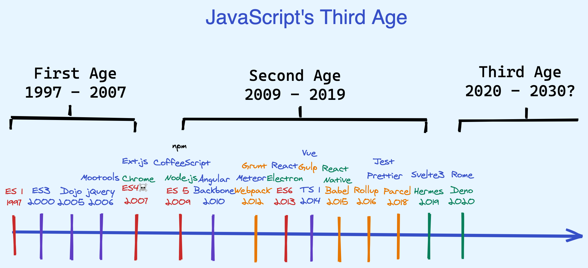

Javascript
[TOC]
我的思考
箭头函数
const hehe = (input) => {
console.log(input);
}
hehe('nihao');
箭头函数实际上是把一个函数复制给一个变量，JavaScript 中函数是一等公民。
JS Tutorial
[A re-introduction to JavaScript]
JavaScript is notorious for being the world's most misunderstood programming language.
臭名昭著！
Overview
1995 created, Brendan Eich（布兰登-艾奇）, Netscape
远景公司将 JavaScript 托管给 ECMA(European standards organization)，ECMA 负责 JavaScript 的维护，所以 Javascript 又叫做 ECMAScript，最新的 JavaScript 标准是 ECMAScript edition 6 2015 (ES2015, ES6)。
JavaScript 没有输入输出的概念，其与外界通信取决于它运行在什么样的环境中：browser, Adobe Acrobat, Adobe Photoshop, SVG images, server-side environments such as Node.js, embedded computers, GNOME，JavaScript 在这些环境下（前端后端）都可以运行，可以说是一门非常“万能”的语言了。
JavaScript 是一门多范式的动态语言，其语法基于 Java 和 C，支持面向对象编程范式，支持函数式编程。在 JavaScript 中，函数是第一公民。JavaScript 采用 object prototypes（对象原型）来实现面向对象的机制，而不是 class。
JavaScript is a prototype-based, multi-paradigm, single-threaded, dynamic language, supporting object-oriented, imperative（命令式编程）, and declarative (e.g. functional programming) styles.
数据类型：
Number
JavaScript 只有浮点型数值
JavaScript 中 Number 的定义是："double-precision 64-bit format IEEE 754 values"，所有的 Number 都是 8 字节双精度的浮点数。JavaScript 中的数值类型都是双精度浮点型类型，占 8 个字节，并没有整型数值类型！
console.log(3 / 2); // 1.5, not 1
console.log(Math.floor(3 / 2)); // 1 An apparent integer is in fact implicitly a float.
parseInt 陷阱
parseInt 有一个可选参数，按照何种进制进行字符串到数字的转换。老的浏览器会将 0 开头的字符串解释成 8 进制数字，为了保证将我们的字符串转换成我们想要的数字，我们在用到 parseInt 时，一定要指定进制数。
// new browser
parseInt('123', 10); // 123
parseInt('010', 10); // 10
parseInt('11', 2); // 3
parseInt('0x10'); // 16
// older browser
parseInt('010'); // 8
注意，parseFloat() always uses base 10.
parse string to number 的其他方式
+ '42'; // 42
+ '010'; // 10
+ '0x10'; // 16
parseInt / parseFloat 与 + 比较，贪心算法
parseFloat('12.3sss', 10) // 12.3
parseInt('123sss', 10) // 123
+ '12.3ss' // NaN
+ '123ss' // NaN
NaN
A special value called NaN (short for "Not a Number") is returned if the string is non-numeric:
parseInt('hello', 10); // NaN
NaN 有毒，如果将其作为一个运算符参与到任何运算，其结果都会是一个 NaN
NaN + 5; // NaN
You can test for NaN using the built-in isNaN() function:
isNaN(NaN); // true
无穷大 Infinity
1 / 0; // Infinity
-1 / 0; // -Infinity
You can test for Infinity, -Infinity and NaN values using the built-in isFinite() function:
isFinite(1 / 0); // false
isFinite(-Infinity); // false
isFinite(NaN); // false
String
基础知识
JavaScript 中的 String 是 Unicode(UTF-16)字符串（没有国际化的问题）。
JavaScript 默认用单引号来定义字符串。
JavaScript 中的字符串，是面向对象的字符串，每一个字符串都是一个对象，既然有对象，那么就有属性和方法：
'hello'.length; // 5
'hello'.charAt(0); // "h"
'hello, world'.replace('world', 'mars'); // "hello, mars"
'hello'.toUpperCase(); // "HELLO"
反引号 template literals
They were called "template strings" in prior editions of the ECMAScript 2015 specification. Template literals are supported by Firefox 34, Chrome 41, and Edge 12 and above, but not by Internet Explorer.
ECMAScript 6 comes up with a new type of string literal, using the backtick as the delimiter. These literals do allow basic string interpolation expressions to be embedded, which are then automatically parsed and evaluated.
let person = {name: 'RajiniKanth', age: 68, greeting: 'Thalaivaaaa!' };
let usualHtmlStr = "<p>My name is " + person.name + ",</p>\n" +
"<p>I am " + person.age + " old</p>\n" +
"<strong>\"" + person.greeting + "\" is what I usually say</strong>";
let newHtmlStr =
`<p>My name is ${person.name},</p>
<p>I am ${person.age} old</p>
<p>"${person.greeting}" is what I usually say</strong>`;
console.log(usualHtmlStr);
console.log(newHtmlStr);
As you can see, we used the ``` around a series of characters, which are interpreted as a string literal, but any expressions of the form ${..} are parsed and evaluated inline immediately.
One really nice benefit of interpolated string literals is they are allowed to split across multiple lines:
var Actor = {"name": "RajiniKanth"};
var text =
`Now is the time for all good men like ${Actor.name}
to come to the aid of their
country!`;
console.log(text);
// Now is the time for all good men like RajiniKanth
// to come to the aid of their
// country!
null, undefined, Boolean()
null, which is a value that indicates a deliberate non-value. null 是一个值
undefined, which is a value of type undefined that indicates an uninitialized variable — that is, a value hasn't even been assigned yet. undefined 是类型
如果我们在定义变量的时候没有声明变量的值，那么这个变量的类型就是 undefined.
var tmp;
typeof(tmp); // undefined
true or false（这两个值是 JavaScript 中的两个关键字）
false,0, empty strings (""),NaN,null, andundefinedall becomefalse.- All other values become
true.
Boolean(''); // false
Boolean(234); // true
Boolean(false) // false
Boolean('false') // true
typeof(true) // boolean
true 和 false 两个值同样支持 Boolean 运算符：&& || !
Variables
变量声明的关键字：let, const, var
关键字声明的变量的生效范围：let < var
如果我们在声明变量的时候，没有对其赋值，那么该变量的类型就是 undefined
let
ES6 引入
let 关键字声明的变量仅局限于代码块：
The following is an example of scope with a variable declared with **let**:
// myLetVariable is *not* visible out here
for (let myLetVariable = 0; myLetVariable < 5; myLetVariable++) {
// myLetVariable is only visible in here
}
// myLetVariable is *not* visible out here
const
ES6 引入
const 用于声明常量（常量声明后，不能再进行赋值，否则抛出异常）：
const Pi = 3.14; // variable Pi is set
Pi = 1; // will throw an error because you cannot change a constant variable.
var
var 是 JavaScript 中最常见的变量声明关键字。
An example of scope with a variable declared with var:
// myVarVariable *is* visible out here
for (var myVarVariable = 0; myVarVariable < 5; myVarVariable++) {
// myVarVariable is visible to the whole function
}
// myVarVariable *is* visible out here
function fn(){
var a = 1;
console.log(a); // 1
}
console.log(a); // Uncaught ReferenceError: a is not defined
从上面可以看出，function 可以对 var 进行封装。
上面这种现象的解释：
An important difference between JavaScript and other languages like Java is that in JavaScript, blocks do not have scope; only functions have a scope. So if a variable is defined using
varin a compound statement (for example inside anifcontrol structure), it will be visible to the entire function. However, starting with ECMAScript 2015,letandconstdeclarations allow you to create block-scoped variables.
正确的做法：
for (let myVarVariable = 0; myVarVariable < 5; myVarVariable++) {
// myVarVariable is local to this block
}
Operators
数值运算符
var x = 5;
x += 5;
x = x + 5;
x ++;
x --;
'hello' + ' world'; // "hello world"
number 类型和 string 类型相加，number 类型会转成 string 类型
'3' + 4 + 5; // "345"
3 + 4 + '5'; // "75"
3.14 + 's'; // 3.14s
布尔运算符
比较运算符：>, <, >=, <=, ==, ===, !=, !==
强制类型转换的坑
字符和数字进行比较，字符先转成数字！
布尔值与其他对象进行比较，先将布尔值转成数字！
123 == '123'; // true
1 == true; // true
123 != '123' // false
1 != true // false
为了避免强制类型转换导致的意外，改用 === 进行比较：
123 === '123'; // false
1 === true; // false
123 !== '123'; // true
1 !== true; // true
位运算符
Control structures
if, for, while, of, in, switch case
JavaScript 兼容 C 语言的 if, while, for 等语法结构，同时还有自己独特的语法结构：
for (let value of array) {
// do something with value
}
for (let property in object) {
// do something with object property
}
|| &&
JavaScript 中的 || 和 && 是惰性求值，其会先检查操作符的前一部分，如果不符合要求，那么后一部分就不会执行运算检查。
The && and || operators use short-circuit logic, which means whether they will execute their second operand is dependent on the first. This is useful for checking for null objects before accessing their attributes:
var name = o && o.getName();
Or for caching values (when falsy values are invalid):
var name = cachedName || (cachedName = getName()); // 妙啊
python 和 JavaScript 比较：
不同点：JavaScript 的 || 对应 Python 的 or
相同点：| 和 & 都是位运算
// The AND operator preserves non-Boolean values and returns them as they are
result = '' && 'foo'; // result is assigned "" (empty string)
result = 2 && 0; // result is assigned 0
result = 'foo' && 4; // result is assigned 4
三目运算符
var allowed = (age > 18) ? 'yes' : 'no';
Objects
-
JavaScript 中的任何元素都是对象！
-
JavaScript 中的对象都是键值对集合
-
JavaScript 的执行效率非常快！
1, 2 —> 3
创建空对象的两种方式
var obj = new Object();
And:
var obj = {};
获取对象属性的两种方式
var obj = {
name: 'Carrot',
for: 'Max', // 'for' is a reserved word, use '_for' instead.
details: {
color: 'orange',
size: 12
}
};
// chained together
obj.details.color;
obj['details']['size']
用函数的方法创建类
function Person(name, age) {
this.name = name;
this.age = age;
}
// Define an object
var you = new Person('You', 24);
// We are creating a new person named "You" aged 24.
you.name;
you['name'];
// can use a variable to define a key
var love = prompt('what is your key?');
you[love] = prompt('what is its value?')
you.for = 'Simon'; // Syntax error, because 'for' is a reserved word
you['for'] = 'Simon'; // works fine
Arrays
Array 是一个特殊的 Object。
var a = new Array();
a[0] = 'dog';
a[1] = 'cat';
a[2] = 'hen';
a.length; // 3
// 等价于
var a = ['dog', 'cat', 'hen'];
a.length; // 3
array.length
注意，array.length 获取到的并不是 array 里面元素的个数，而是 array 的长度：
var a = ['dog', 'cat', 'hen'];
a[100] = 'fox';
a.length; // 101 the length of the array is one more than the highest index.
for, forEach, for of
遍历 array：
for (var i = 0; i < a.length; i++) {
// Do something with a[i]
}
// ES6 引入
for (const currentValue of a) {
// Do something with currentValue
}
// ES5 引入
['dog', 'cat', 'hen'].forEach(function(currentValue, index, array) {
// Do something with currentValue or array[index]
});
增删改查
Arrays come with a number of methods. See also the full documentation for array methods.
| Method name | Description |
|---|---|
a.toString() | Returns a string with the toString() of each element separated by commas. |
a.toLocaleString() | Returns a string with the toLocaleString() of each element separated by commas. |
a.concat(item1[, item2[, ...[, itemN]]]) | Returns a new array with the items added on to it. |
a.join(sep) | Converts the array to a string — with values delimited by the sep param |
a.pop() | Removes and returns the last item. |
a.push(item1, ..., itemN) | Appends items to the end of the array. |
a.shift() | Removes and returns the first item. |
a.unshift(item1[, item2[, ...[, itemN]]]) | Prepends items to the start of the array. |
a.slice(start[, end]) | Returns a sub-array. |
a.sort([cmpfn]) | Takes an optional comparison function. |
a.splice(start, delcount[, item1[, ...[, itemN]]]) | Lets you modify an array by deleting a section and replacing it with more items. |
a.reverse() | Reverses the array. |
Functions
JavaScript 中的函数也是对象！
JavaScript 的函数就是 class
如果函数没有返回值，JavaScript 默认返回 undefined。
传参
JavaScript 允许传入 0 参数，或者传入超过定义数量的参数：
function add(x, y) {
var total = x + y;
return total;
}
add(); // NaN
// You can't perform addition on undefined
add(2, 3, 4); // 5
// added the first two; 4 was ignored
arguments / ...args
JavaScript 的函数中，有一个array-like 的 arguments 变量，可以直接访问，里面存储了传入函数的所有参数
function add() {
var sum = 0;
for (var i = 0, j = arguments.length; i < j; i++) {
sum += arguments[i];
}
return sum;
}
add(2, 3, 4, 5); // 14
利用 ...args 的 mini 版本：
function avg(...args) {
var sum = 0;
for (let value of args) {
sum += value;
}
return sum / args.length;
}
avg(2, 3, 4, 5); // 3.5
// 等价于
avg.apply(null, [2, 3, 4, 5]); // 3.5 avg 对象化 function 是第一公民？
JavaScript 的 ...args 与 Python 的 *args 机制相同，都可以将存储剩下来的参数。
anonymous functions
创建匿名函数并赋值给一个变量：
var avg = function() {
var sum = 0;
for (var i = 0, j = arguments.length; i < j; i++) {
sum += arguments[i];
}
return sum / arguments.length;
};
匿名函数立即执行：
var a = 1;
var b = 2;
(function() {
var b = 3;
a += b;
})();
a; // 4
b; // 2
var charsInBody = (function counter(elm) {
if (elm.nodeType == 3) { // TEXT_NODE
return elm.nodeValue.length;
}
var count = 0;
for (var i = 0, child; child = elm.childNodes[i]; i++) {
count += counter(child);
}
return count;
})(document.body); // 最后的 (document.body) 是指创建完匿名函数后，立刻执行该匿名函数，传入的参数是 docu…
The name provided to a function expression as above is only available to the function's own scope. This allows more optimizations to be done by the engine and results in more readable code. The name also shows up in the debugger and some stack traces, which can save you time when debugging.
JavaScript 面向对象的实现机制
JavaScript 通过函数来定义类，类就是函数！
JavaScript 采用 object prototypes（对象原型）来实现面向对象的机制，而不是 class。
JavaScript uses functions as classes.
Prototype-based programming
Prototype-based programming is a style of object-oriented programming in which classes are not explicitly defined, but rather derived by adding properties and methods to an instance of another class or, less frequently, adding them to an empty object.
In simple words: this type of style allows the creation of an object without first defining its class.
ugly design
function makePerson(first, last) {
return {
first: first,
last: last
};
}
function personFullName(person) {
return person.first + ' ' + person.last;
}
function personFullNameReversed(person) {
return person.last + ', ' + person.first;
}
var s = makePerson('Simon', 'Willison');
personFullName(s); // "Simon Willison"
personFullNameReversed(s); // "Willison, Simon"
good design
function makePerson(first, last) {
return {
first: first,
last: last,
fullName: function() {
return this.first + ' ' + this.last;
},
fullNameReversed: function() {
return this.last + ', ' + this.first;
}
};
}
var s = makePerson('Simon', 'Willison');
s.fullName(); // "Simon Willison"
s.fullNameReversed(); // "Willison, Simon"
Note on the this keyword. Used inside a function, this refers to the current object.
this, new
function Person(first, last) {
this.first = first;
this.last = last;
this.fullName = function() {
return this.first + ' ' + this.last;
};
this.fullNameReversed = function() {
return this.last + ', ' + this.first;
};
}
var s = new Person('Simon', 'Willison');
better design
Our person objects are getting better, but there are still some ugly edges to them. Every time we create a person object we are creating two brand new function objects within it — wouldn't it be better if this code was shared?
function personFullName() {
return this.first + ' ' + this.last;
}
function personFullNameReversed() {
return this.last + ', ' + this.first;
}
function Person(first, last) {
this.first = first;
this.last = last;
this.fullName = personFullName;
this.fullNameReversed = personFullNameReversed;
}
better better design: prototype
That's better: we are creating the method functions only once, and assigning references to them inside the constructor. Can we do any better than that? The answer is yes:
function Person(first, last) {
this.first = first;
this.last = last;
}
Person.prototype.fullName = function() {
return this.first + ' ' + this.last;
};
Person.prototype.fullNameReversed = function() {
return this.last + ', ' + this.first;
};
This is an incredibly powerful tool. JavaScript lets you modify something's prototype at any time in your program, which means you can add extra methods to existing objects at runtime:
var s = new Person('Simon', 'Willison');
s.firstNameCaps(); // TypeError on line 1: s.firstNameCaps is not a function
Person.prototype.firstNameCaps = function() {
return this.first.toUpperCase();
};
s.firstNameCaps(); // "SIMON"
Interestingly, you can also add things to the prototype of built-in JavaScript objects. Let's add a method to String that returns that string in reverse:
var s = 'Simon';
s.reversed(); // TypeError on line 1: s.reversed is not a function
String.prototype.reversed = function() {
var r = '';
for (var i = this.length - 1; i >= 0; i--) {
r += this[i];
}
return r;
};
s.reversed(); // nomiS
重写 toString() 方法：
var s = new Person('Simon', 'Willison');
s.toString(); // [object Object]
Person.prototype.toString = function() {
return '<Person: ' + this.fullName() + '>';
}
s.toString(); // "<Person: Simon Willison>"
Inner functions
内部函数变量作用域
函数的函数，内部函数可以访问父函数的作用域内的变量。
function parentFunc() {
var a = 1;
function nestedFunc() {
var b = 4; // parentFunc can't use this
return a + b;
}
return nestedFunc(); // 5
}
内部函数的使用场景
This provides a great deal of utility in writing more maintainable code. If a called function relies on one or two other functions that are not useful to any other part of your code, you can nest those utility functions inside it. This keeps the number of functions that are in the global scope down, which is always a good thing.
This is also a great counter to the lure of global variables. When writing complex code it is often tempting to use global variables to share values between multiple functions — which leads to code that is hard to maintain. Nested functions can share variables in their parent, so you can use that mechanism to couple functions together when it makes sense without polluting your global namespace — "local globals" if you like. This technique should be used with caution, but it's a useful ability to have.
闭包
function makeAdder(a) {
return function(b) {
return a + b;
};
}
var add5 = makeAdder(5);
var add20 = makeAdder(20);
add5(6); // 11
add20(7); // 27
A closure is the combination of a function and the scope object in which it was created. Closures let you save state — as such, they can often be used in place of objects. You can find several excellent introductions to closures.
Further Reading
[Introduction to Object-Oriented JavaScript]
[Several excellent introductions to closures]
JS History
- [JS-Third-Age]
- [JavaScript: The First 20 Years] 2020-06 出版，作者：Allen Wirfs-Brock (editor of ES6)，Brendan Eich

ES5 新特性
use strict
// 严格模式下你不能使用未声明的变量
"use strict";
x = 3.14; // 报错 (x 未定义)
function myFunction() {
"use strict";
y = 3.14; // 报错 (y 未定义)
}